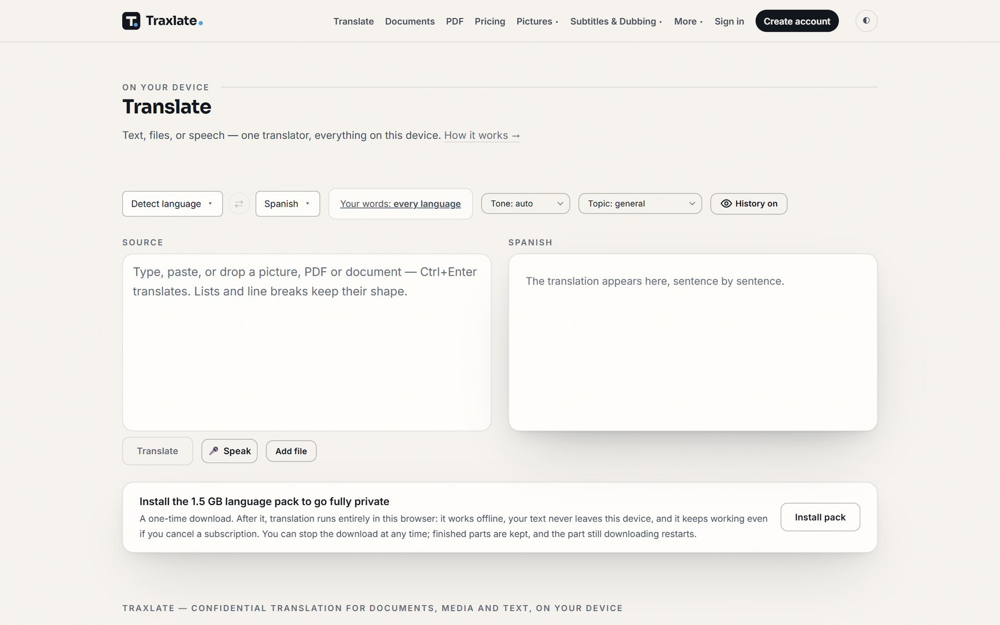
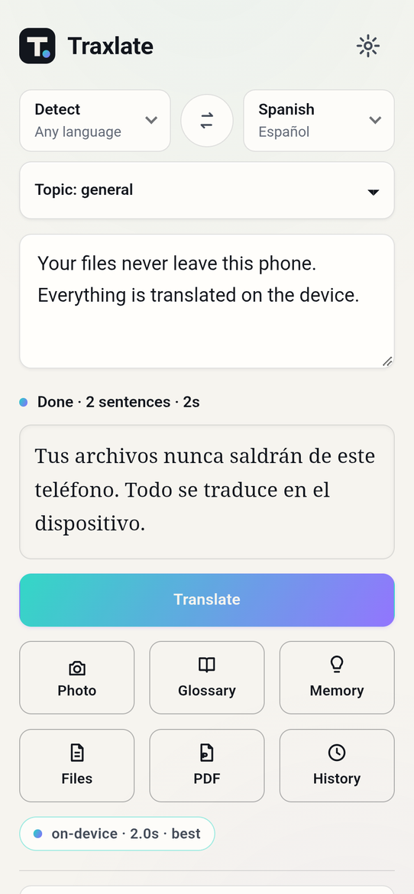
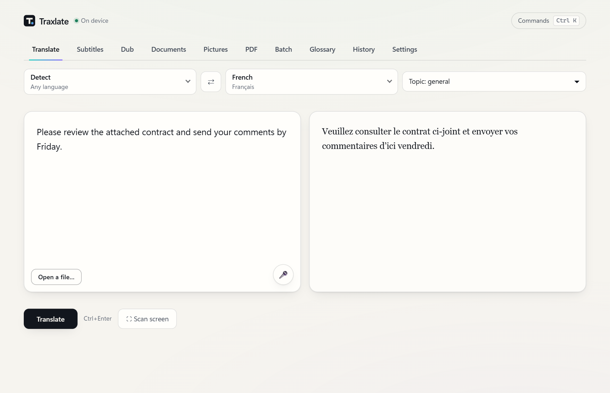
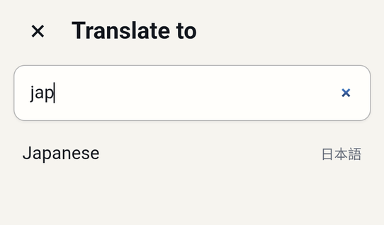
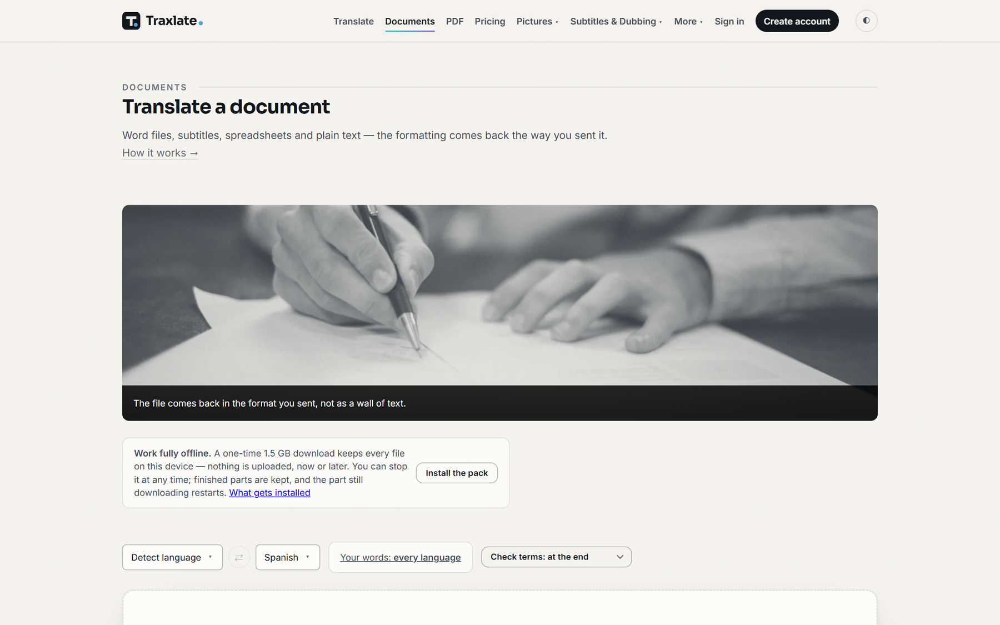
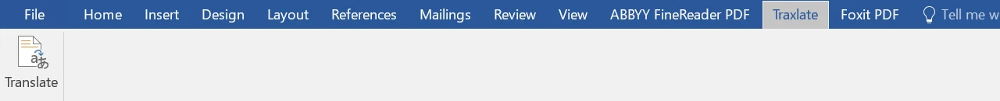
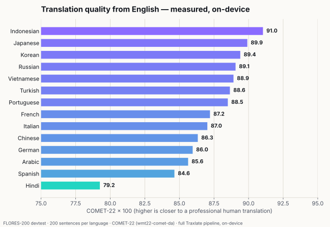
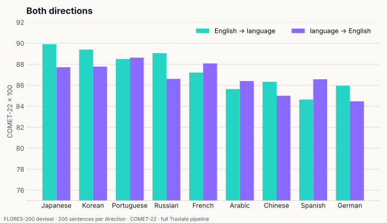
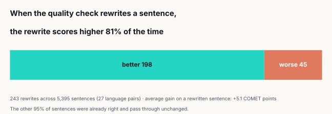

On your device · 66 languages · offline
Private translation that
runs on your own device.
Traxlate translates text, documents, PDFs, pictures and videos on your computer or phone — not on someone else's server. Nothing you translate is uploaded, it works offline after a one-time download, and every translation is checked before you see it.

Why Traxlate
The translator comes to you.
What you translate stays yours
The language pack runs on your own device, so a contract, a medical letter or an unreleased manuscript never leaves it. Privacy isn't a setting — it's how it's built.
Works offline, everywhere you do
Install the pack once (about 1.5 GB) and translate on a plane or anywhere without signal — in your browser, on your desktop, on your phone, and inside Word.
Every translation is checked
Traxlate reads its own work back — catching a dropped sentence, a changed number or an added word — and rewrites what fails. Rewrites score higher 81% of the time.
Your file comes back as your file
Word, PowerPoint, Excel, EPUB, subtitles and more return in their own format, with headings, tables and styling — not a wall of pasted text.
Text
Type, paste or speak. Lists and line breaks keep their shape.
Documents
Word, PowerPoint, Excel, EPUB, XLIFF, RTF, HTML, Markdown, CSV and plain text.
PDFs
Page by page, picking up where you left off. Scanned pages are read too.
Pictures
Photograph a sign, a menu or a page — read and translated on the device.
Subtitles & dubbing
Timed captions, or a new voice track timed to the original. The video stays with you.
Microsoft Word
A Traxlate tab in Word: translate a selection or the whole document, in place.
See it
Real screens, real translations.
Every translation shown here was produced by Traxlate itself, on the device.





Measured quality
Measured, not claimed.
COMET-22 on the public FLORES-200 test set — 200 sentences per language, each compared with a professional human translation — through the same pipeline the apps ship, on the device.



COMET estimates how close a translation is to what a professional would write — higher is closer. These numbers measure distance to human references; they are not a comparison with other translation services, and no other service was called. Full method and every number →
Everywhere you work
One engine, every surface.
| Where | Status | Notes |
|---|---|---|
| Web | Live | Any modern browser at traxlate.com — offline after the pack installs. |
| Windows | Beta | Includes the Microsoft Word tab. Download |
| macOS | Beta | Apple Silicon and Intel. Download |
| Linux | Beta | .deb and AppImage. Download |
| Android | Beta | Camera translation and sharing from any app. Google Play coming. Download |
| iOS | Coming | |
| Developers & AI agents | Live | A local API on your own machine, a command line, and tools your AI agent can call. Developer guide |
Free to start.
No card, and no account for your first pages. The free plan covers 30 pages a month; the paid plans remove the page limit and add more devices.